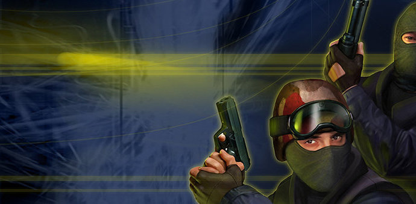
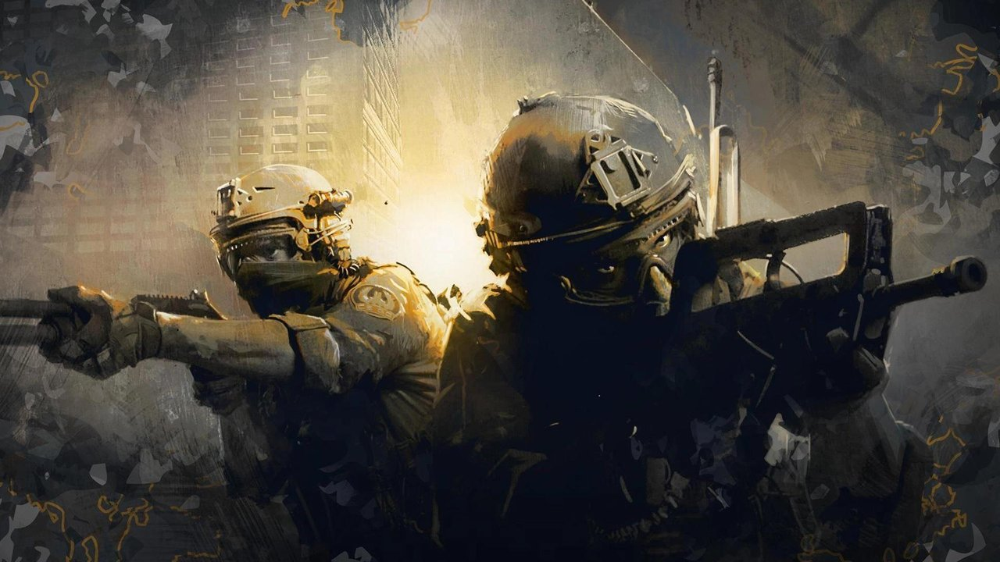
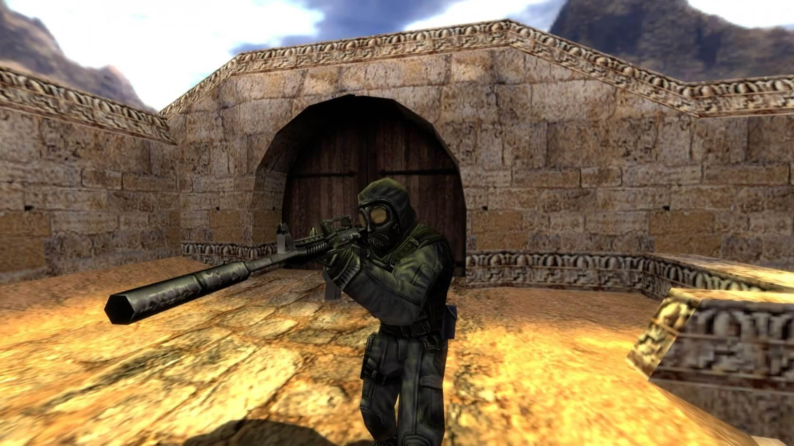
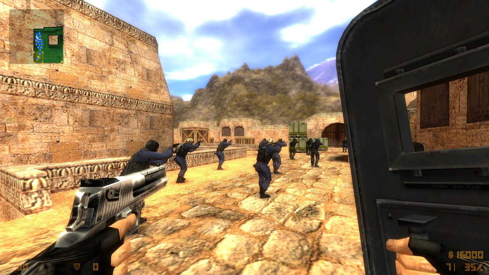

Counter-Strike: The history of the world's most popular "shooter"
Counter Strike: Global Offensive is one of the most popular video games in the world today. She occupies the first lines on Steam, and every student and schoolchild knows about her existence.
However, 18 years ago, when the first version of the game first appeared, no one could have predicted such a success.
Counter-Strike is an online shooter, the essence of which is the confrontation between two teams - terrorists and counter-terrorists (special forces). Both teams have goals in the round, completing which, or completely destroying the opposing team, they receive a match point. After winning a certain number of rounds, the team wins the match. The most popular scenario is when the terrorists need to plant a bomb at a certain point, and the special forces need to defuse it.



The idea of a video game about the confrontation between terrorists and special forces arose in the late 90s, that is, before the September 11 attacks and the total terrorist threat. Its creator, Ming "Gooseman" Lee, a Canadian of Vietnamese origin, did not make a commercial product about an urgent and acute problem, but a modification - a mod - of another game on a topic of interest to him.
Prior to CS, multiplayer battles took place in high-speed shooters with fantasy scenery and completely unrealistic physics, such as Quake and Unreal Tournament. Min Li also created mods for them, and very successful ones: Navy Seals (a mod for the first Quake) and Action Quake 2 (a mod for the second Quake, which he made as part of the modding community of the rather popular A-TEAM at that time).

